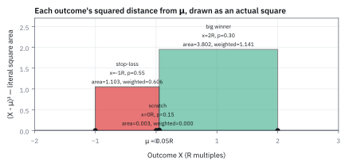
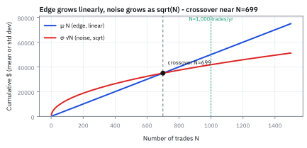
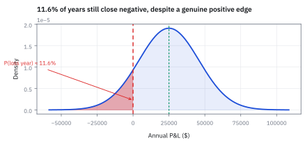
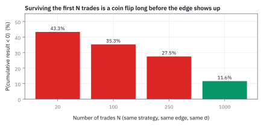
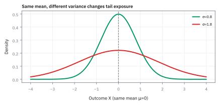
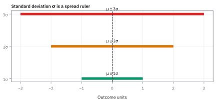

1.4 Variance and Standard Deviation
ค่าเฉลี่ยเท่ากัน ไม่ได้แปลว่าเดาผลลัพธ์ได้ง่ายเท่ากัน
เพื่อนสองคนมานัดสายเฉลี่ย 0 นาทีทั้งคู่ คนแรกมาเร็ว 10 นาทีหรือสาย 10 นาที คนที่สองมาเร็ว 1 นาทีหรือสาย 1 นาที ถ้าต้องจองโต๊ะร้านอาหาร คุณอยากนัดกับใคร?
เฉลย: คนที่สอง ค่าเฉลี่ยบอกไม่ได้เพราะเป็นศูนย์ทั้งคู่ ลองเฉลี่ยระยะห่างจากเวลานัดดิบ ๆ ก็ได้ศูนย์อีก เพราะ +10 กับ −10 หักกันหมด ต้องยกกำลังสองก่อน: คนแรกได้ 100 คนที่สองได้ 1 ถอดรากกลับคือเหวี่ยง 10 นาทีกับ 1 นาที
ตัวเลขก่อนถอดรากเรียกว่า variance หลังถอดรากเรียกว่า standard deviation หัวข้อนี้ใช้มันตอบคำถามที่ค่าเฉลี่ยตอบไม่ได้ คือกลยุทธ์ที่ชนะเฉลี่ยจะยังขาดทุนทั้งปีได้บ่อยแค่ไหน
เริ่มจากไม้ TSLA เดิม
หัวข้อ 1.3 ได้ว่าไม้ TSLA ได้เฉลี่ยไม้ละ 0.05R หรือ \$50 เมื่อ 1R คือ \$1,000 แต่ไม้จริงไม่เคยได้ \$50 มันได้ +\$2,000 เสีย \$1,000 หรือเท่าทุน ระยะห่างจาก \$50 ไปถึงผลจริงแต่ละไม้ใหญ่กว่าตัว edge หลายสิบเท่า
คำถามของหัวข้อนี้: ผลแต่ละไม้เหวี่ยงรอบ \$50 กว้างแค่ไหน เทรด 1,000 ไม้ต่อปีแล้วความเหวี่ยงรวมเป็นเท่าไร และปีหนึ่งจะยังจบขาดทุนได้กี่เปอร์เซ็นต์ ทั้งที่ทุกไม้มี edge เป็นบวก
ศัพท์ที่ใช้ในหัวข้อนี้
- variance
- ค่าเฉลี่ยของระยะห่างจากค่ากลางที่ยกกำลังสองแล้ว ใช้วัดว่าผลลัพธ์เหวี่ยงกว้างแค่ไหน และใช้รวมความเหวี่ยงของหลายไม้เข้าด้วยกัน
- standard deviation
- รากที่สองของ variance ใช้บอกความเหวี่ยงในหน่วยเดิม เช่นดอลลาร์หรือนาที จึงเทียบกับค่าเฉลี่ยได้ตรง ๆ
- R-multiple
- หน่วยวัดกำไรขาดทุนเทียบกับเงินที่ยอมเสียต่อไม้ ในหัวข้อนี้ 1R คือ \$1,000 ใช้เทียบไม้ต่างขนาดกันได้
- edge
- กำไรเฉลี่ยต่อไม้ที่เป็นบวก ใช้เป็นเหตุผลที่จะเล่นกลยุทธ์ซ้ำ
- Sharpe ratio
- กำไรเฉลี่ยหารด้วย standard deviation ใช้วัดว่าได้ผลตอบแทนเท่าไรต่อความเหวี่ยงหนึ่งหน่วย ยิ่งสูงยิ่งดี
- position sizing
- การเลือกว่าจะเสี่ยงเงินเท่าไรต่อไม้ ใช้คุมให้ความเหวี่ยงของพอร์ตอยู่ในระดับที่รับได้
- covariance
- ตัวเลขที่บอกว่าสองผลลัพธ์มักเหวี่ยงไปทางเดียวกันแค่ไหน ใช้บอกว่าความเหวี่ยงของผลรวมจะมากกว่าหรือน้อยกว่าผลบวกของความเหวี่ยงแต่ละตัว (สร้างเต็มในหัวข้อ 6.5)
- independence
- การที่ผลของไม้หนึ่งไม่เปลี่ยนโอกาสของไม้อื่น ใช้เป็นเงื่อนไขที่ทำให้ variance ของหลายไม้บวกกันได้ตรง ๆ
- Normal distribution
- รูปทรงระฆังคว่ำที่สมมาตร กำหนดด้วยค่าเฉลี่ยกับ standard deviation สองตัว ใช้ประมาณผลรวมของไม้จำนวนมาก (สร้างเต็มในหัวข้อ 1.9)
- Central Limit Theorem (CLT)
- ข้อเท็จจริงที่ว่าผลรวมของสิ่งไม่เกี่ยวกันจำนวนมากมีรูปทรงเข้าใกล้ระฆังคว่ำ ใช้เป็นเหตุผลที่ประมาณผลรายปีด้วย Normal ได้ (พิสูจน์ในหัวข้อ 14.2)
- z-score
- ระยะห่างจากค่าเฉลี่ยวัดเป็นจำนวนเท่าของ standard deviation ใช้เปิดตารางหาโอกาสของหาง
- Poisson distribution
- รูปแบบโอกาสสำหรับนับจำนวนเหตุการณ์ในช่วงเวลาหนึ่ง ใช้จำลองจำนวนไม้ที่ได้เทรดจริงในหนึ่งปี (สร้างเต็มในหัวข้อ 1.6)
- Law of Total Variance
- วิธีแยกความเหวี่ยงรวมเป็นสองก้อน คือก้อนที่มาจากเงื่อนไขที่ยังไม่รู้ กับก้อนที่มาจากความเหวี่ยงภายในแต่ละเงื่อนไข ใช้เมื่อจำนวนไม้ในปีเองก็ไม่แน่นอน
- drawdown
- ระยะที่พอร์ตลดลงจากจุดสูงสุดก่อนหน้า ใช้วัดความเจ็บปวดระหว่างทางที่ variance วัดไม่ได้ตรง ๆ
- backtest
- การลองรันกลยุทธ์กับราคาในอดีต ใช้ประมาณค่าเฉลี่ยและความเหวี่ยงก่อนลงเงินจริง
สัญลักษณ์ที่ใช้ในหัวข้อนี้
| สัญลักษณ์ | ความหมาย | หน่วย |
|---|---|---|
| $X$ | ผลลัพธ์ของหนึ่งไม้ เป็นได้ +2, −1 หรือ 0 | R |
| $x_i$, $p_i$ | ผลลัพธ์แบบที่ $i$ และโอกาสของมัน | R, 0 ถึง 1 |
| $\mu$ | ค่าเฉลี่ยต่อไม้ ในตัวอย่างนี้ 0.05R | R |
| $\mathrm{Var}(X)$ | variance ของ $X$ | R² |
| $\sigma$ | standard deviation ต่อไม้ คือรากของ variance | R |
| $N$ | จำนวนไม้ในหนึ่งปี | ไม้ |
| $\mu_{\text{annual}}, \sigma_{\text{annual}}$ | ค่าเฉลี่ยและ standard deviation ของผลรวมทั้งปี | R |
| $S$ | Sharpe ratio รายปี | — |
| $z$ | ระยะห่างจากค่าเฉลี่ยเป็นจำนวนเท่าของ $\sigma$ | — |
| $\Phi(z)$ | พื้นที่ทางซ้ายของ $z$ ใต้ระฆังมาตรฐาน | 0 ถึง 1 |
ที่มาที่ไป: ทำไมโลกเลือกกำลังสอง
ต้นศตวรรษที่ 19 Legendre กับ Gauss ต้องหาวงโคจรดาวจากข้อมูลที่วัดคลาดเคลื่อน ทั้งคู่เลือกลดผลรวมของความคลาดเคลื่อนยกกำลังสอง ราวปี 1805 ถึง 1809 เพราะคำนวณง่ายและได้คำตอบเดียวชัด ๆ วิธีนี้คือ least squares ที่เราจะใช้ในบทที่ 15
ปี 1918 Ronald Fisher ตั้งชื่อค่าเฉลี่ยของระยะยกกำลังสองว่า variance และชี้สมบัติที่ทำให้มันชนะทุกทางเลือก: สาเหตุที่ไม่เกี่ยวกันหลายอย่างรวมกัน variance ของผลรวมคือผลบวกของ variance แต่ละตัว ขั้นที่ 2 จะลองกับเหรียญสองเหรียญให้เห็นว่าค่าสัมบูรณ์ทำแบบนี้ไม่ได้
โจทย์: ของที่ให้มาทั้งหมด
| ผลลัพธ์ | เกิดเมื่อไร | โอกาส $p_i$ | ผลลัพธ์ $x_i$ (R) | เป็นเงิน (1R = \$1,000) |
|---|---|---|---|---|
| ชนะ | ราคาถึงเป้ากำไรก่อนชนจุดตัดขาดทุน | 0.30 | +2R | +\$2,000 |
| แพ้ | ราคาวิ่งผิดทางจนชนจุดตัดขาดทุนก่อน | 0.55 | −1R | −\$1,000 |
| เสมอ | ปิดกลางทางตอนกำไรขาดทุนใกล้ศูนย์ | 0.15 | 0R | \$0 |
ค่าเฉลี่ยต่อไม้ $\mu = 0.05R = \$50$ จากหัวข้อ 1.3 และเทรดปีละ 1,000 ไม้ โอกาสทั้งสามรวมกันได้ 1.00 พอดี จึงไม่มีผลลัพธ์แบบที่สี่ที่ลืมนับ
ลองวัดระยะห่างจากค่าเฉลี่ยตรง ๆ ก่อน
ความคิดแรกที่เป็นธรรมชาติที่สุด: เอาผลลัพธ์แต่ละแบบลบค่าเฉลี่ย ถ่วงด้วยโอกาส แล้วรวม ดูว่าได้เท่าไร
ขั้นที่ 1 — ระยะห่างดิบเฉลี่ยออกมาเป็นศูนย์เสมอ
หักค่าเฉลี่ย 0.05 ออกจากผลลัพธ์แต่ละแบบ คูณด้วยโอกาส แล้วรวมสามแถว
ฝั่งกำไรดึงขึ้น 0.5850 ฝั่งขาดทุนดึงลง 0.5775 และไม้เสมอดึงลงอีกนิด สามแรงหักกันหมดพอดี นี่ไม่ใช่เรื่องบังเอิญ ค่าเฉลี่ยคือจุดที่แรงสองฝั่งสมดุลกัน ระยะห่างดิบจึงออกมาเป็นศูนย์ทุกครั้ง ไม่ว่าข้อมูลจะเหวี่ยงแค่ไหน
ทำไมไม่ใช้ค่าสัมบูรณ์ ทั้งที่ง่ายกว่า
ต้องกำจัดเครื่องหมายลบก่อน ทางที่ใครก็คิดได้คือตัดเครื่องหมายทิ้ง แล้วเฉลี่ยระยะห่าง ฟังดูดีและเข้าใจง่าย แต่มันพังตอนเอาความเหวี่ยงของหลายไม้มารวมกัน ซึ่งเป็นงานที่เราต้องทำทุกวัน
ลองกับของที่เล็กที่สุด คือเหรียญสองเหรียญที่ไม่เกี่ยวกัน แต่ละเหรียญให้ +1 หรือ −1 อย่างละครึ่ง แล้วดูว่าความเหวี่ยงของผลรวมคำนวณจากความเหวี่ยงของแต่ละเหรียญได้ไหม
ขั้นที่ 2 — เหรียญสองเหรียญ: ค่าสัมบูรณ์บวกกันไม่ได้ กำลังสองบวกได้
ผลรวมของสองเหรียญเป็น −2, 0, 0 หรือ +2 อย่างละ 1/4 เทียบสองวิธีวัดความเหวี่ยง
แต่ละเหรียญห่างจากศูนย์ 1 เสมอ ถ้าวัดด้วยค่าสัมบูรณ์ ผลรวมกลับห่างเฉลี่ยแค่ 1 ไม่ใช่ 2 เพราะครึ่งหนึ่งของเวลาเหรียญหักกันเอง ความเหวี่ยงรวมจึงเดาจากชิ้นส่วนไม่ได้ ต้องไล่ทุกกรณีใหม่ทุกครั้ง
ถ้าวัดด้วยกำลังสอง ได้ 2 พอดี เท่ากับ 1 บวก 1 นี่คือเหตุผลที่โลกเลือกกำลังสอง: variance ของสิ่งที่ไม่เกี่ยวกันบวกกันได้ตรง ๆ และสมบัตินี้คือที่มาของกฎรากของจำนวนวันที่ใช้ทั้งเล่ม
ขั้นที่ 3 — variance และสูตรลัด
นิยามคือค่าเฉลี่ยของระยะห่างยกกำลังสอง บรรทัดต่อ ๆ ไปกระจายวงเล็บจนได้สูตรที่คำนวณจากตารางเดียวได้เร็วกว่า
กระจายกำลังสองแบบ $(a-b)^2=a^2-2ab+b^2$ แล้วเฉลี่ยทีละพจน์ ค่าคงที่ $\mu$ ดึงออกมาได้ตาม linearity ในหัวข้อ 1.3 ส่วนค่าเฉลี่ยของค่าคงที่ก็คือตัวมันเอง
พอแทนค่าเฉลี่ยของ X ด้วย μ เทอม −2μ² กับ +μ² รวมกันเหลือ −μ² ได้สูตรลัด: ค่าเฉลี่ยของกำลังสอง ลบกำลังสองของค่าเฉลี่ย สองอย่างนี้คนละตัว และสับสนกันบ่อยมาก
แล้วเอาไปใช้ทำอะไรได้จริงบ้าง
ใช้กำหนดขนาดไม้: กลยุทธ์ที่เหวี่ยงเป็นสองเท่าควรเสี่ยงเงินครึ่งเดียว เพื่อให้ความเหวี่ยงเป็นดอลลาร์เท่ากัน กองทุนใช้หลักนี้แบ่งเงินข้ามกลยุทธ์
ใช้คำนวณ Sharpe ratio ซึ่งนักลงทุนถามก่อนตัวเลขอื่น คือกำไรเฉลี่ยหารความเหวี่ยง และใช้ประเมินว่าต้องเก็บข้อมูลนานแค่ไหนถึงจะแยกฝีมือออกจากดวงได้ ยิ่งเหวี่ยงมากยิ่งต้องรอนาน หัวข้อ 14.5 คิดเป็นตัวเลขจริง
Figure 1 — variance คือพื้นที่สี่เหลี่ยมจริง ไม่ใช่แค่สูตร

ระยะห่างของแต่ละผลลัพธ์จากค่าเฉลี่ยวาดเป็นสี่เหลี่ยมจัตุรัส พื้นที่ของมันคือระยะยกกำลังสอง variance คือพื้นที่เหล่านี้ถ่วงด้วยโอกาสแล้วบวกกัน สี่เหลี่ยมของไม้ชนะใหญ่ที่สุดเพราะอยู่ไกลค่าเฉลี่ยที่สุด
ส่วน A — ความเหวี่ยงของหนึ่งไม้
ของที่มี: ตารางไม้ TSLA ด้านบน ถามว่า variance และ standard deviation ต่อไม้เท่าไร และใหญ่กว่า edge กี่เท่า คิดสองทางแล้วเทียบกัน
ขั้นที่ 4 — หาค่าเฉลี่ยของกำลังสองก่อน เพราะสูตรลัดต้องใช้
ยกผลลัพธ์กำลังสองก่อน แล้วค่อยถ่วงโอกาส ไม่ใช่ยกค่าเฉลี่ยกำลังสอง
ได้ค่าเฉลี่ยของกำลังสองเท่ากับ 1.75 สังเกตว่าเครื่องหมายลบของไม้แพ้หายไปตั้งแต่ยกกำลังสอง ไม้แพ้จึงเพิ่มความเหวี่ยง ไม่ได้หักล้างไม้ชนะแบบในขั้นที่ 1
ขั้นที่ 5 — คำนวณ variance สองทาง แล้วเทียบกัน
ทางแรกคือนิยามตรง ๆ ยกระยะห่างกำลังสองทีละแถวแล้วถ่วง ทางที่สองคือสูตรลัดจากขั้นที่ 3
สองทางได้ 1.7475 ตรงกันทุกทศนิยม หน่วยเป็น R² เพราะทุกระยะถูกคูณกับตัวเอง ตัวเลขที่มีหน่วยแปลก ๆ แบบนี้คือเหตุผลที่ต้องถอดรากในขั้นถัดไป
ขั้นที่ 6 — ถอดราก แปลงเป็นดอลลาร์ แล้วเทียบกับ edge
ถอดรากเพื่อคืนหน่วย R แปลงเป็นดอลลาร์ด้วย 1R เท่ากับ \$1,000 แล้วเทียบกับค่าเฉลี่ย 0.05R
ไม้หนึ่งเหวี่ยงราว \$1,322 รอบค่าเฉลี่ย \$50 ความเหวี่ยงใหญ่กว่า edge 26.4 เท่า ถ้าดูแค่ไม้สองไม้ edge มองไม่เห็นเลย มันจมอยู่ใต้ความเหวี่ยงทั้งหมด
ส่วน B — ความเหวี่ยงใหญ่กว่า edge 26 เท่า
คำตอบ: variance ต่อไม้ 1.7475 R² หรือ standard deviation ราว \$1,322 ต่อไม้ เทียบกับกำไรเฉลี่ยแค่ \$50 ต่อไม้ ระยะสั้นจึงเป็นเรื่องของความเหวี่ยงล้วน ๆ ส่วนขั้นถัดไปจะแสดงว่าทำไมระยะยาว edge ถึงชนะได้
ขั้นที่ 7 — รวม N ไม้: ค่าเฉลี่ยโตตาม N แต่ความเหวี่ยงโตตามราก N
ลองสองไม้ที่ไม่เกี่ยวกันก่อน ค่าเฉลี่ยรวมคือ 0.10R ส่วน variance รวมคือ 2 คูณ 1.7475 เท่ากับ 3.495 ถอดรากได้ 1.87R ไม่ใช่ 2 คูณ 1.322 เท่ากับ 2.64R นี่คือผลของเหรียญในขั้นที่ 2 ที่ใช้กับไม้เทรด
ค่าเฉลี่ยบวกกันตรง ๆ ได้ Nμ ตาม additivity ส่วน variance ต้องกระจายกำลังสองของผลรวมออกมาดู จะได้เทอมยกกำลังสองของแต่ละไม้ รวมเป็น Nσ² กับเทอมไขว้ของทุกคู่ไม้ ซึ่งเฉลี่ยเป็นศูนย์เมื่อสองไม้ไม่เกี่ยวกัน (หัวข้อ 6.5 พิสูจน์เต็ม)
ตรงนี้แหละหัวใจของทั้งหัวข้อ: ถอดรากของ Nσ² ได้ σ คูณราก N ไม่ใช่ N คูณ σ พอเอา σ√N ไปหาร Nμ ตัว N ตัดกับราก N เหลือ √N ตัวเดียว เทรดเพิ่มสี่เท่า คุณภาพเพิ่มแค่สองเท่า
ขั้นที่ 8 — เมื่อจำนวนไม้ในปีหนึ่งก็ไม่แน่นอน
สมมติปีหน้ามีโอกาสครึ่งหนึ่งที่จะได้เทรด 900 ไม้ และครึ่งหนึ่ง 1,100 ไม้ ความเหวี่ยงทั้งปีมีสองแหล่ง คือความเหวี่ยงของแต่ละไม้ กับการที่ค่าเฉลี่ยทั้งปีเองขยับเป็น 45R หรือ 55R ตามจำนวนไม้
ก้อนแรกคือความไม่แน่นอนของจำนวนไม้: ค่าเฉลี่ยทั้งปีเป็น Nμ ซึ่งเหวี่ยงไปตาม N จึงได้ μ² คูณ variance ของ N ก้อนที่สองคือความเหวี่ยงของไม้ที่สะสมตามจำนวนไม้เฉลี่ย ทั้งสองก้อนบวกกันเสมอ ความไม่แน่นอนของจำนวนไม้จึงเพิ่มความเสี่ยงได้อย่างเดียว
ในกรณี 900 หรือ 1,100 ไม้ N ห่างค่าเฉลี่ย 100 ไม้เสมอ variance ของ N จึงเป็น 10,000 ก้อนแรกเพิ่มแค่ 25 จาก 1,747.5 เพราะ edge 0.05R เล็กมาก ถ้าจำนวนไม้เป็น Poisson ตามหัวข้อ 1.6 ก้อนแรกยิ่งเล็ก เหลือ 2.5 วิธีแยกแบบนี้เรียกว่า Law of Total Variance
Figure 2 — edge โตเชิงเส้น noise โต √N

กำไรเฉลี่ยสะสมโตเป็นเส้นตรงไม้ละ \$50 ส่วนความเหวี่ยงสะสมโตตามราก N เริ่มที่ \$1,322 สองเส้นตัดกันราว 699 ไม้ หลังจากนั้น edge ถึงจะโผล่พ้นความเหวี่ยง
ส่วน C — Sharpe ratio รายปี
ของที่มี: 1,000 ไม้ต่อปี ค่าเฉลี่ยและความเหวี่ยงต่อไม้จากส่วน A ถามว่าทั้งปีได้เฉลี่ยเท่าไร เหวี่ยงเท่าไร และ Sharpe เท่าไร
ขั้นที่ 9 — รวมหนึ่งปีแล้วหา Sharpe
คูณค่าเฉลี่ยด้วย 1,000 แต่คูณความเหวี่ยงด้วยราก 1,000 ตามขั้นที่ 7
รากของ 1,000 คือ 31.62 ความเหวี่ยงทั้งปีจึงเป็น 31.62 เท่าของไม้เดียว ขณะที่ค่าเฉลี่ยทั้งปีเป็น 1,000 เท่า ได้เฉลี่ยปีละ \$50,000 เหวี่ยงราว \$41,800 และ Sharpe 1.20
ส่วน D — ปีนี้จะจบขาดทุนได้บ่อยแค่ไหน
ผลรวมของไม้จำนวนมากที่ไม่เกี่ยวกันมีรูปทรงเข้าใกล้ระฆังคว่ำ ลองนึกภาพ: ไม้เดียวมีแค่สามค่า สองไม้มีหกค่า พันไม้มีค่าเรียงกันถี่จนเป็นเส้นโค้ง ข้อเท็จจริงนี้ชื่อ Central Limit Theorem (CLT) พิสูจน์ในหัวข้อ 14.2 ตอนนี้ใช้มันประมาณโอกาสที่ผลทั้งปีต่ำกว่าศูนย์
ขั้นที่ 10 — วัดว่าศูนย์อยู่ลึกแค่ไหนในหางซ้าย
เอาศูนย์ลบค่าเฉลี่ย แล้วหารด้วยความเหวี่ยง ได้ z-score จากนั้นอ่านพื้นที่ทางซ้ายใต้ระฆัง
ศูนย์อยู่ต่ำกว่าค่าเฉลี่ย 1.196 เท่าของความเหวี่ยง พื้นที่ทางซ้ายตรงนั้นคือราว 11.6% หรือเกือบหนึ่งปีในแปดปี ทั้งที่ทุกไม้มี edge เป็นบวก
ตัวเลข Φ ไม่ได้คิดในหัว เปิดตารางระฆังมาตรฐานที่ −1.20 ได้ 0.1151 หรือกด norm.cdf(-1.196) ได้ 0.1158 ปัดเป็น 11.6%
ขั้นที่ 11 — แค่ 20 ไม้: นับจริงทีละไม้แทนการประมาณด้วยระฆัง
กับไม้น้อย ๆ ระฆังประมาณได้ไม่ดี เพราะผลรวมเป็นได้แค่จำนวนเต็มของ R ลองนับจริงสองไม้ก่อน แล้วให้คอมพิวเตอร์ทำซ้ำแบบเดียวกันจนครบ 20 ไม้
หลังสองไม้จะขาดทุนได้สองแบบ แพ้ทั้งคู่ได้ −2R หรือแพ้หนึ่งเสมอหนึ่งได้ −1R ซึ่งมีสองลำดับจึงคูณสอง รวมได้ 46.75% กฎในบรรทัดที่สามคือการนับเดียวกันแบบทั่วไป: จะมายืนที่ kR หลังไม้ถัดไปได้ ต้องมาจาก k+1 แล้วแพ้ มาจาก k แล้วเสมอ หรือมาจาก k−2 แล้วชนะ
ทำซ้ำ 20 รอบได้โอกาสขาดทุน 41.0% ส่วนระฆังให้ 43.3% คลาดไปราว 2 percentage points เมื่อข้อมูลน้อยให้นับจริง อย่าเชื่อค่าประมาณ
Worked Example — โจทย์จิ๋วที่คำนวณได้
โจทย์ให้อะไรมาบ้าง: กำไรเฉลี่ยทั้งปี 50R และ standard deviation ทั้งปี 41.80R ต้องหา Sharpe ratio และโอกาสจบปีขาดทุน
คำตอบ: Sharpe เท่ากับ 50 หาร 41.80 ได้ราว 1.20 และโอกาสจบปีขาดทุนราว 11.6%
ตรวจเองใน 10 วินาที: 50 หาร 41.80 ได้ 1.196 ถ้าได้ตัวเลขราว 0.03 แปลว่าเผลอเอา variance 1,747.5 ไปหาร แทนที่จะเป็น standard deviation
แปลว่าอะไร: edge บวกไม่ได้ลบปีขาดทุนออกไป ราวหนึ่งปีในแปดปียังจบติดลบ ผู้จัดการที่รู้ข้อนี้จะไม่ปิดกลยุทธ์ดี ๆ เพราะขาดทุนปีเดียว
Figure 3 — 11.6% ของปี ยังปิดติดลบทั้งที่ edge เป็นบวกทุก trade

ระฆังของผลทั้งปีมีศูนย์กลางที่ \$50,000 กว้างราว \$41,800 พื้นที่แดงทางซ้ายของศูนย์คือปีที่จบขาดทุน ราว 11.6% ทั้งที่ทุกไม้มี edge เป็นบวก
Figure 4 — edge เดียวกัน σ เดียวกัน แต่ N น้อยยังเสี่ยงสูง

โอกาสที่ผลสะสมยังติดลบ เทียบกับจำนวนไม้ที่เล่นไปแล้ว ช่วง 20 ไม้แรกยังติดลบราว 41% ถ้านับจริง เส้นนี้ค่อย ๆ ลดลงเมื่อเล่นมากขึ้น edge ต้องการจำนวนไม้ถึงจะชนะความเหวี่ยง
กับดัก: independence ไม่ใช่ของฟรี
Sharpe 1.20 และโอกาสขาดทุน 11.6% ตั้งอยู่บนสมมติฐานว่าแต่ละไม้ไม่เกี่ยวกัน ถ้าไม้แพ้มาเป็นกลุ่มในช่วงวิกฤต เทอมไขว้ในขั้นที่ 7 จะไม่เป็นศูนย์อีกต่อไป มันบวกเพิ่ม ความเหวี่ยงจริงจึงสูงกว่านี้ และปีขาดทุนจะมาบ่อยกว่านี้
กับดัก (ต่อ): edge บวกไม่ได้แปลว่าปลอดภัยตั้งแต่ไม้แรก
20 ไม้แรกยังมีโอกาสจบขาดทุน 41.0% จากการนับจริง ใครตัดสินกลยุทธ์จาก 20 ไม้กำลังโยนเหรียญ และค่าประมาณจากระฆังต้องตรวจเสมอเมื่อจำนวนไม้ยังน้อย
ข้อจำกัด: วิธีนี้สมมติอะไร และของจริงเป็นอย่างไร
| เรื่อง | วิธีนี้สมมติว่า | ของจริงเป็นอย่างไร | ผลที่ตามมาเวลาใช้งาน |
|---|---|---|---|
| ทิศของความเสี่ยง | นับการเหวี่ยงขึ้นกับลงเท่ากัน | คนเจ็บเฉพาะตอนลง | กลยุทธ์ที่กำไรก้อนใหญ่นาน ๆ ครั้งถูกลงโทษทั้งที่ไม่ควร |
| รูปของหาง | ใช้ได้ดีเมื่อผลใกล้ระฆังคว่ำ | ตลาดมีวันแรงบ่อยกว่าระฆังทำนาย | ความเสี่ยงจริงสูงกว่าตัวเลขนี้ โดยเฉพาะวันวิกฤต |
| ความคงที่ | ความเหวี่ยงคงที่ตลอดปี | มันเปลี่ยนตลอดและมาเป็นกลุ่ม | ตัวเลขจากปีที่แล้วอาจใช้กับปีนี้ไม่ได้ ซึ่งคือเหตุผลของหัวข้อ 16.4 |
แถวแรกคือเหตุผลที่โต๊ะจริงดู drawdown คู่กับ standard deviation เสมอ ซึ่งอยู่ในหัวข้อ 17.6
Figure 5 — Same mean, different variance

สองเส้นมีค่าเฉลี่ยศูนย์เท่ากัน แบบเดียวกับเพื่อนสองคนในตอนต้น แต่เส้นที่กว้างกว่ามีโอกาสไปถึงค่าไกล ๆ มากกว่าหลายเท่า ค่าเฉลี่ยมองไม่เห็นความต่างนี้เลย
Figure 6 — Sigma as a spread ruler

standard deviation คือไม้บรรทัดที่วัดว่าผลลัพธ์มักอยู่ห่างค่าเฉลี่ยแค่ไหน ใช้ตั้งขนาดไม้ให้ความเหวี่ยงเป็นเงินอยู่ในระดับที่รับได้
สรุปที่ใช้ได้จริง
- ระยะห่างดิบจากค่าเฉลี่ยเฉลี่ยได้ศูนย์เสมอ จึงต้องยกกำลังสอง variance คือ $\mathbb{E}[(X-\mu)^2]=\mathbb{E}[X^2]-\mu^2$ และ standard deviation คือรากของมัน
- เลือกกำลังสองเพราะความเหวี่ยงของสิ่งที่ไม่เกี่ยวกันบวกกันได้ เหรียญสองเหรียญได้ 1 + 1 = 2 ส่วนค่าสัมบูรณ์ทำแบบนี้ไม่ได้
- ไม้ TSLA เหวี่ยง \$1,322 รอบ edge \$50 ใหญ่กว่า 26 เท่า ระยะสั้นจึงเป็นเรื่องของความเหวี่ยงล้วน ๆ
- N ไม้ที่ไม่เกี่ยวกัน: ค่าเฉลี่ยโตตาม N ความเหวี่ยงโตตามราก N Sharpe รายปีจึงเป็น $(\mu/\sigma)\sqrt{N}$ ตัวอย่างนี้ได้ 1.20 และยังมีปีขาดทุนราว 11.6%
- ถ้าไม้เกี่ยวกัน ความเหวี่ยงจริงสูงกว่าสูตรนี้ และเมื่อข้อมูลน้อยให้นับจริงแทนการประมาณด้วยระฆัง